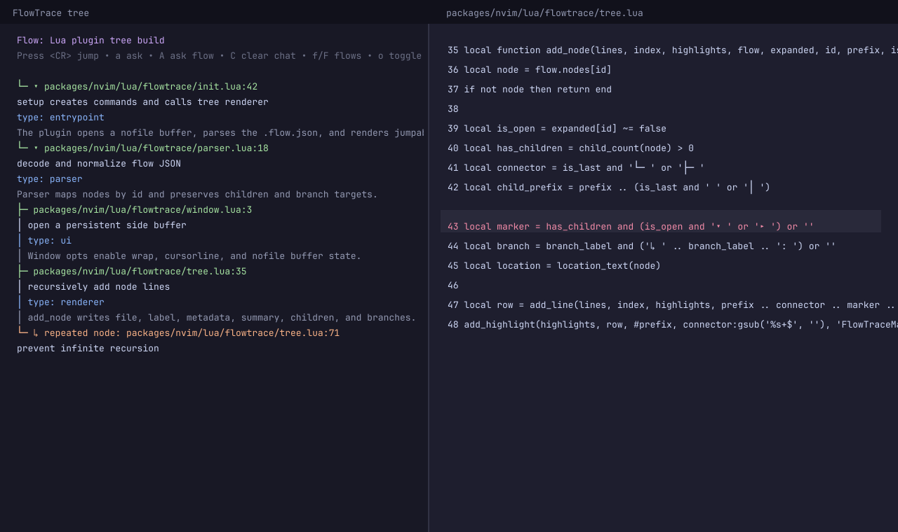
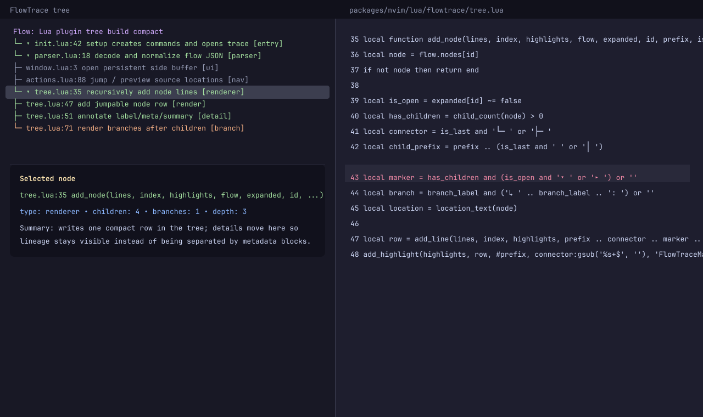
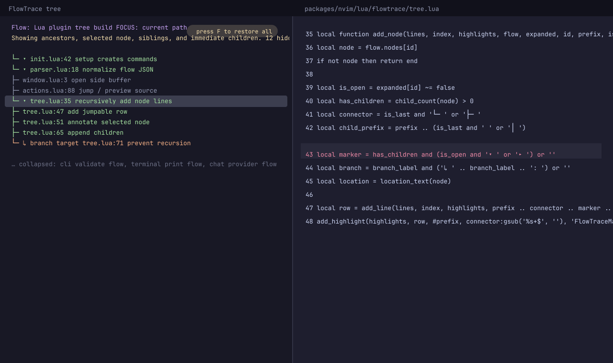
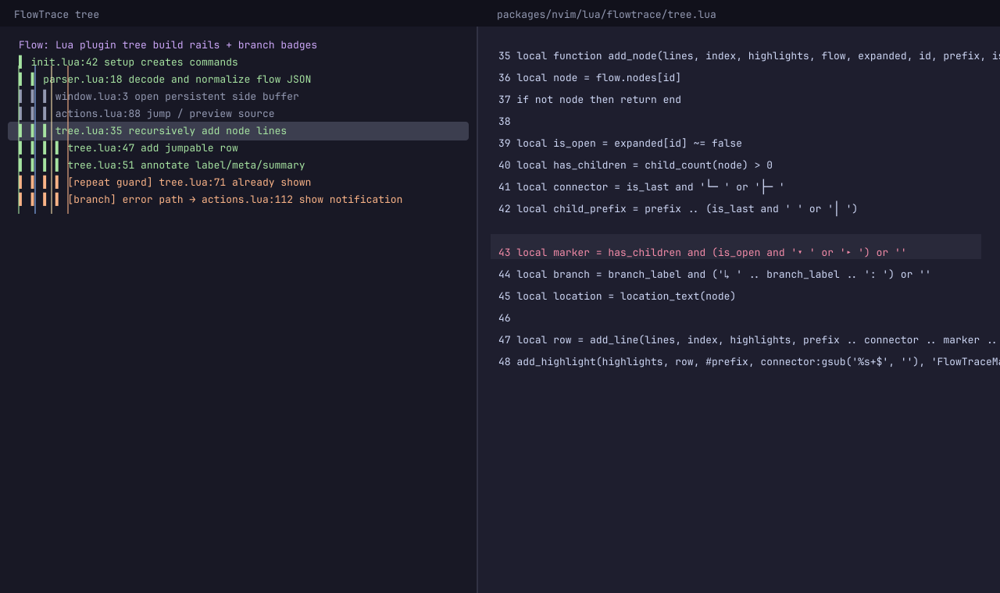
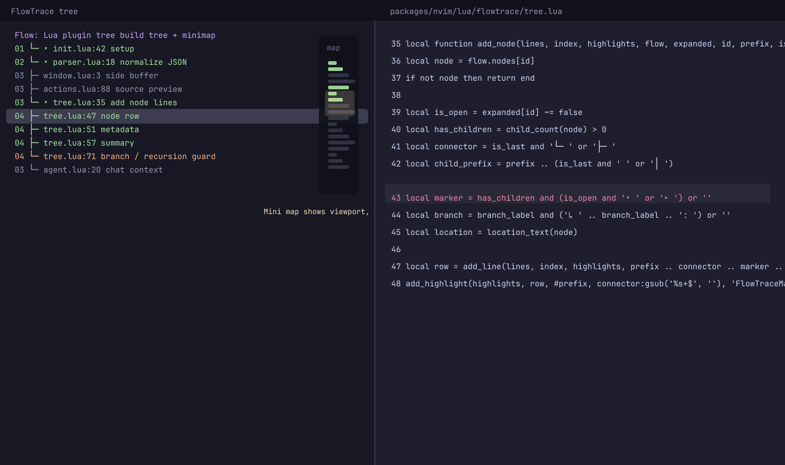

0. Current baseline
Represents the existing mental model: a persistent side tree with a jumpable location row plus label, metadata, and summary rows for every node.

2. Compact rows + selected detail pane
Make each node a one-line row, then show the selected node’s full metadata and summary in a footer or floating detail pane.

3. Focus / show-my-path mode
A toggle that hides distant branches and keeps ancestors, the selected node, siblings, and immediate children.

4. Scope rails + branch badges
Replace some ASCII tree noise with persistent colored rails and make decision points explicit with compact badges.

5. Depth gutter + minimap
Add path/depth numbers on rows plus a tiny right-side overview showing viewport, depth changes, and active lineage.
Suggested path
Breadcrumb + active lineage. It solves the core complaint with the smallest layout change.
Compact mode + detail pane as an opt-in for large traces.
Focus mode for “I am lost, show me only this path.”
Rails/badges are a good visual polish pass that can ride along with any of the above. The minimap is likely worth prototyping last, or only as a toggle, because it has the highest complexity-to-risk ratio.